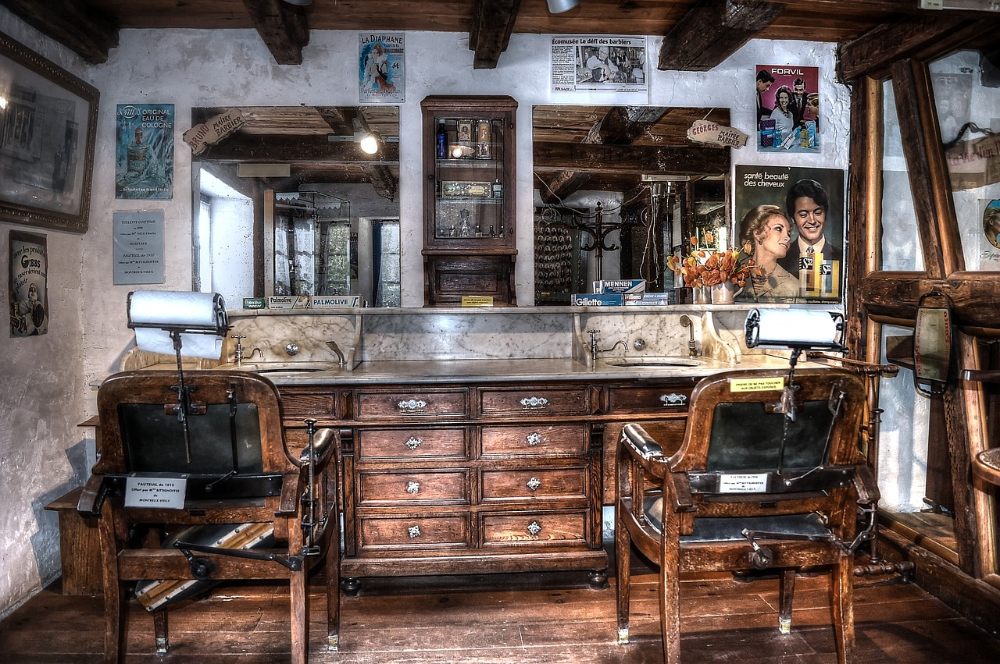
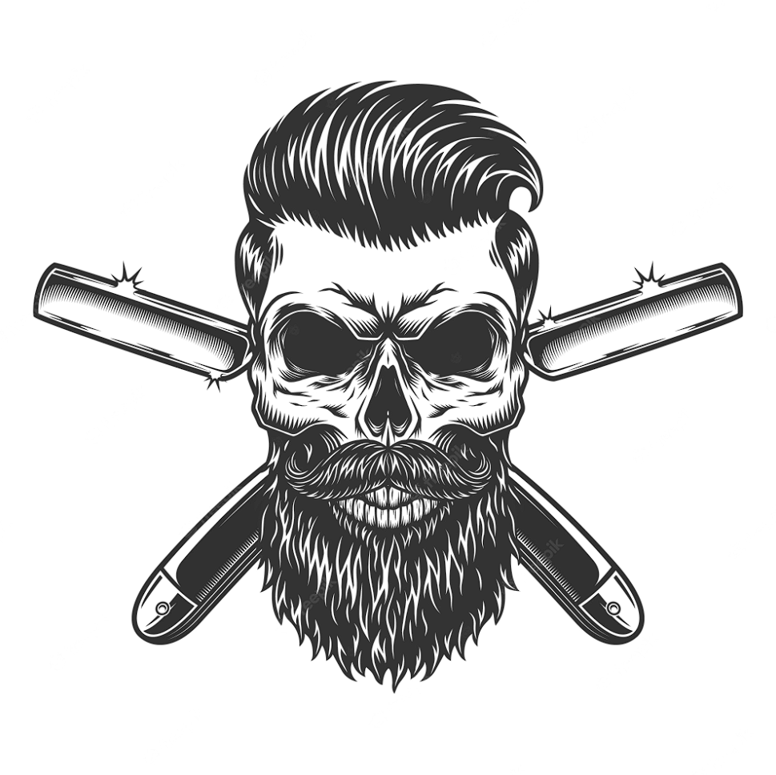

Sobre a The Kings Barbearia
Localizada no coração da cidade a The Kings barbearia traz para o mercado o que há de melhor para o seu cabelo e barba. Fundada em 2019, a The Kings barbearia já é destaque na cidade e conquista novos clientes a cada dia.
Nossa missão é: "Proporcionar auto-estima e qualidade de vida aos clientes".
Oferecemos profissionais experientes e antenados às mudanças no mundo da moda. O atendimento possui padrão de excelência e agilidade, garantindo qualidade e satisfação dos nossos clientes.
Nosso estabelecimento
Nosso estabelecimento está localizado no coração da cidade.
Propietário
- Nome: Loan Hardem dos Santos
- Idade: 17 anos
- Cargos:
- Gestor
- Barbeiro
- Formação:
- Vikings Barbearia
- Barber Day online: White e Silver